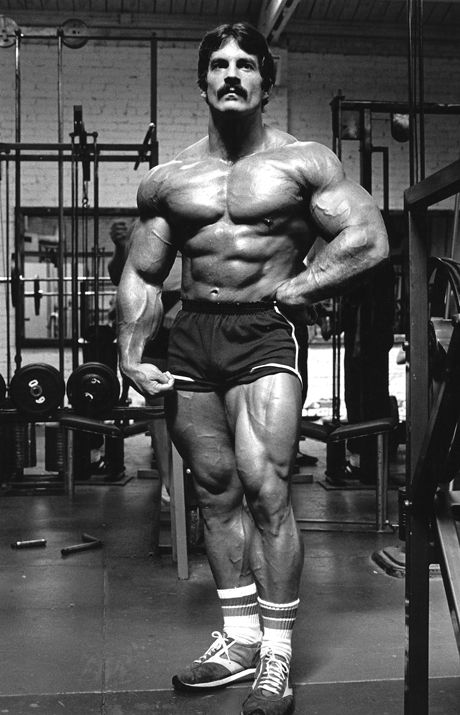

Heavy Duty
Mike Mentzer y el Origen del Heavy Duty
Mike Mentzer nació el 15 de noviembre de 1951 en Germantown, Pensilvania, EE.UU. Desde joven mostró interés por el culturismo, inspirado por íconos como Bill Pearl. A los 12 años, comenzó a entrenar con pesas, y a los 15 años ya levantaba 170 kg en press de banca, demostrando un potencial excepcional.
Inicios en el Culturismo
En 1971, Mentzer compitió por primera vez en el Mr. America, donde quedó en el décimo lugar, pero este resultado lo motivó a perfeccionar su entrenamiento. Durante este periodo, se interesó en las ideas de Arthur Jones, creador de las máquinas Nautilus y defensor del entrenamiento de alta intensidad (HIT).
Mentzer adoptó y perfeccionó los principios del HIT, cuestionando los métodos tradicionales de alto volumen. Su enfoque se basaba en la intensidad máxima, menor frecuencia y la importancia del descanso para la recuperación total.
El Nacimiento de la Filosofía "Heavy Duty"
A mediados de los años 70, Mike Mentzer desarrolló su propio enfoque llamado Heavy Duty, una versión más precisa del HIT. Este método se basa en:
- Entrenar con una intensidad extrema, llegando al fallo muscular absoluto.
- Pocas series por músculo, normalmente 1 a 2 series efectivas.
- Menor frecuencia de entrenamiento, permitiendo una recuperación completa.
En lugar de realizar sesiones largas y repetitivas, Mentzer defendía entrenamientos más cortos, pero mucho más intensos, argumentando que el exceso de volumen lleva al sobreentrenamiento y frena el progreso.
Éxitos en la Competición
En 1976, ganó el Mr. America con una puntuación perfecta (300 de 300), consolidándose como una de las promesas más importantes del culturismo. En 1978, ganó el Mr. Universe con otra puntuación perfecta, siendo el primer culturista en lograrlo.
En 1980, participó en el Mr. Olympia en una de las competiciones más polémicas de la historia. A pesar de estar en su mejor forma, perdió frente a Arnold Schwarzenegger, quien regresó inesperadamente de su retiro. Esta controversia lo llevó a retirarse de la competición profesional.
Legado y Filosofía
Tras dejar la competición, Mentzer se dedicó a la enseñanza y divulgación del Heavy Duty. Escribió libros influyentes como:
- 📘 "Heavy Duty"
- 📘 "Heavy Duty II: Mind and Body"
En estos textos profundiza en la relación entre la mente y el cuerpo, defendiendo un enfoque científico y racional del entrenamiento.
Últimos Años y Muerte
En sus últimos años, Mike Mentzer trabajó como entrenador personal y siguió difundiendo su filosofía. Falleció el 10 de junio de 2001, a los 49 años, dejando un legado duradero en el mundo del culturismo.
✅ Impacto Duradero del Heavy Duty:
El enfoque de Mentzer sigue siendo influyente, con atletas modernos que adoptan principios de alta intensidad para optimizar sus resultados con menos tiempo en el gimnasio.